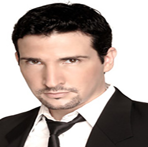
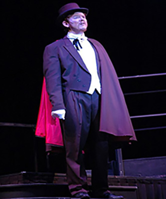
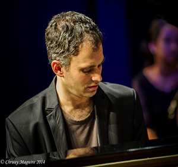
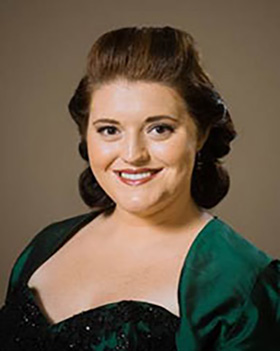
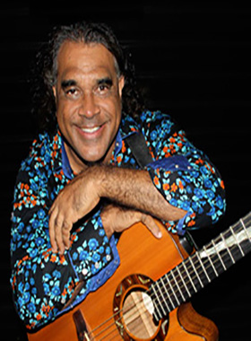
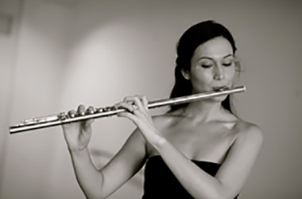
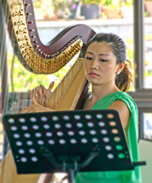

Adam Lopez (Vocal)
Adam Lopez’s exceptional vocal artistry has paved opportunities to perform backing vocals for some of the biggest names in the music industry such as Mariah Carey, Keith Urban and The Coors. His most recent noted collaboration was headlining with Australian Jazz legend James Morrison in a string of Symphonic Concerts in Perth, Hobart and Brisbane...

Alex Thomas (Vocal Tenor)
Alex Thomas has been performing in Townsville for more years than he would like to admit. He grew up locally and started in theatre in the Gang Show about 1985. He took part in school musicals while at Ignatius Park College and sang with the Townsville Junior Choral Society Choir…...

Arthur Athan (Piano)
Arthur Athan is a pianist and teacher from Melbourne, Australia. He currently studies piano with Tamara Smolyar at Monash University. He has received many accolades, including First Prize, the Audience Choice Award and the John Hopkins Fellowship at the 2015 Australian Concerto and Vocal Competition, the Monash Spivakovsky Prize (2015) and a perfect score in his Music Performance studies (2011)....

Benjamin Martin (Piano)
dentified by Newsday NY as an ‘Excellent craftsman’, The New York Times as ‘Distinctive, arresting in style’ and The Australian in 2000 as ‘The best young talent for the new millennium’, pianist/composer Benjamin Martin has become known as an artist of exceptional versatility and subtlety of expression. A child-prodigy, Benjamin aged thirteen memorized Schumann’s Carnaval in two days, and by the age of eighteen had a repertoire of some two-hundred and fifty works plus twenty-five concertos...

Bronwyn Douglass (Vocal - Soprano)
Bronwyn is a Mezzo-soprano who comes from Milton on the coast of NSW. She is currently the holder of the Amelia Joscelyne Memorial Schoarship with the Dame Nellie Melba Trust. Bronwyn graduated with a Masters in Operatic Performance from the Queensland Conservatorium in 2014, also receiving ab award for Academic Excellence and the Wagner Society Encouragement Award. She attended the Lisa Gasteen National Opera School from 2013 – 2015...

David Hudson (Musician/Entertainer)
Domenico is one of Brisbane’s most experienced and versatile multicultural entertainers. He has performed in almost every possible style since he commenced his musical career in 1971 at age 4. He studied music on the traditional European instrument called the Piano Accordion and this is still his chosen instrument, although he also now uses the latest electronic midi accordion which incorporates other built in instruments....
Domenico Taraborrelli (Accordian)
Domenico is one of Brisbane’s most experienced and versatile multicultural entertainers. He has performed in almost every possible style since he commenced his musical career in 1971 at age 4. He studied music on the traditional European instrument called the Piano Accordion and this is still his chosen instrument, although he also now uses the latest electronic midi accordion which incorporates other built in instruments....

Jennifer Bradstreet (Flute)
Jennifer Bradstreet completed a Bachelor of Music with Honours at the Sydney Conservatorium, before taking up a summer scholarship at St Andrews and Oxford in the UK, and then moving to London in 2010. She became a student at the Royal College of Music under British flautist Susan Milan, and graduated with a Postgraduate Diploma of Performance in 2011....

Leah Li (Harp)
Townsville based harpist Leah Xiang Li enjoys a diverse career as an orchestral and chamber musician, soloist, instrumental teacher and primary school language teacher. Leah graduated from the Queensland Conservatorium Griffith University under the tutelage of Sebastien Lipman...
Siobhan Patrick (Vocal - Soprano)
iobhan is a lyric soprano with a Graduate Diploma of Music (Opera) from the Western Australian Academy of Performing Arts and further vocal studies in the UK, Italy and Austria. For the past 3.5 years, Siobhan has been living and working in Vienna.....